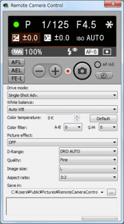

Connect the camera and your computer with a USB cable.
For the detailed connection, please refer to the camera´s manual. Please use the camera with fully-charged batteries or AC adaptor.
| 1 |
Connect the camera and your computer with a USB cable.
For the detailed connection, please refer to the camera´s manual. Please use the camera with fully-charged batteries or AC adaptor. |
|---|---|
| 2 |
Turn on your camera.
|
| 3 |
For Windows
Click [Start] at the bottom left of the Windows desktop, point to [All Programs], and then click [Remote Camera Control]-[Remote Camera Control].
Remote Camera Control starts. For Mac Start Finder, click [Applications], and then double-click [Remote Camera Control] in the [Remote Camera Control] folder.
Remote Camera Control starts.
If the [Select a Device] message appears, select the model name of your camera.  |